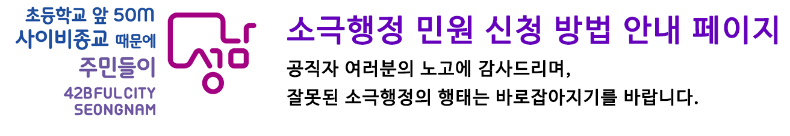
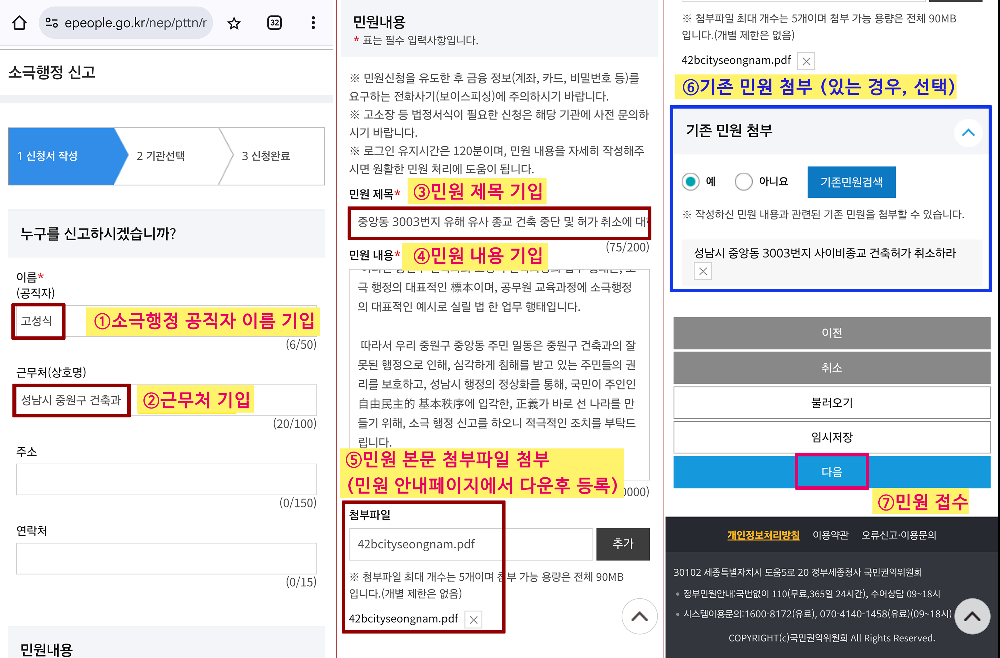

피신고인 이름:
복사
근무처(상호명):
복사
제목:
복사
내용 복사
중앙동 3003번지에 성남시 중원구 건축과에서 허가한 하나님의교회세계복음선교협회(이하 “하나님의교회” 라 칭함)의 건축물에 대한 건축 허가는 公益을 현저하게 害하고, 헌법 제37조에 규정된 公共福利를 심각하게 훼손하는 건축 허가입니다. 중앙동 3003번지의 하나님의교회 건축 허가는 대한민국헌법에 의해 보장받는, 중앙동 주민들의 교육을 받을 권리, 재산권, 환경권, 건강권, 종교의 자유를 침해합니다. 해당 건축 허가는, 중앙동 5,700여 세대, 15,000여 명에 이르는 주민들의 삶에 부정적인 영향을 미치면서, 지역사회의 지속가능한 발전을 저해하고, 극심한 지역 사회 갈등을 일으켜, 제반 사회 비용이 기하급수적으로 증가하게 만들고, 막대한 사회 경제적 손실을 일으키는, 헌법 제37조에서 규정한 公共福利를 심각하게 침해하는 건축 허가입니다. 아울러, 건축법 제1조에서 규정하고 있는 공공복리 증진이라는 법의 목적에도 부합하지 못하는 건축 허가라 할 수 있겠습니다. 그러나, 성남시 중원구 건축과에서는 공청회 등의 개최를 통해, 주민 의견을 청취하는 과정이 일체 없이, 건축을 허가하였으며, 그로 인해 15,000명이 넘는 지역 주민들이 基本權과 公共福利를 직접적으로 침해당하는 초유의 위기에 처하게 되었습니다. 지역 주민들이 교육을 받을 권리, 재산권, 환경권, 건강권, 종교의 자유 등 여러 기본권을 침해 받게 되는 상황에서, 이러한 공공복리 침해가 실질적으로 발생하는 현실과, 현장의 지리적 환경 실태에 대해서는 일체 고민하지 않고, 기존의 업무 관행에 따라 서류만 체크하여, ‘종교시설용지’ 부지에 ‘종교시설’의 건축 신청이 들어왔으니, 건축을 허가 한다는 중원구 건축과 고성식 건축과장의 업무 처리 방식은, 적당히 형식만 갖추어 업무를 처리하려는 적당편의적인 업무 방식이며, 현실과 동떨어진 탁상행정에 해당됩니다. 주민 2,839명이 다수인 민원 (No.48660) 을 통해서 주민들이 기본권의 침해를 받는 다는 사실과해당 건축허가가 공공복리를 쇠퇴시킨다는 사실을 이유로 건축 즉각 중단 및 허가 취소를 요구하였으나, 주민 2,839명이 뜻을 모아 제출한 다수인 민원에 대해서, 중원구 고성식 건축과장은 “주민 2,839명이 민원을 한 것이나, 건축주 1명의 건축 허가를 신청한 것이나 자신이 볼 때는 똑같다.” 며, 公共福利의 본질에 대해 전혀 이해하지 못하는 답변을 하면서, ‘종교시설용지’에 ‘종교시설’ 용도로 건축허가를 신청하여 허가한 것이 무엇이 문제냐는 앵무새 같은 동일한 답변만을 반복하고 있습니다. 고성식 건축과장은 ①현장의 실태 조사, ②교육 전문가/부동산 전문가/교통 분야 전문가/도시계획 전문가 등 외부 전문가 자문 의견 접수, ③주민 공청회의 개최 등, 민원 해결을 위한 적극적인 노력은 어느 하나 기울이지 않으며, 이미 건축 허가를 한 사항이기 때문에, 주민들의 기본권이 침해를 받던 어쨌던 간에, 주민 권리 보호를 위한 공사 중단 및 건축 허가 취소 등의 조치는 구청 스스로 할 수는 없는 일이라고 주장하며, 중원구와 건축과의 체면만을 중시하면서, 복지부동의 행태를 보이고 있습니다. 이러한 중원구 건축과와 고성식 건축과장의 업무 행태는, 소극 행정의 대표적인 標本이며, 공무원 교육과정에 소극행정의 대표적인 예시로 실릴 법 한 업무 행태입니다. 따라서 우리 중원구 중앙동 주민 일동은 중원구 건축과의 잘못된 행정으로 인해, 심각하게 침해를 받고 있는 주민들의 권리를 보호하고, 성남시 행정의 정상화를 통해, 국민이 주인인 自由民主的 基本秩序에 입각한, 正義가 바로 선 나라를 만들기 위해, 소극 행정 신고를 하오니 적극적인 조치를 부탁드립니다.
첨부파일 다운로드
소극행정신고 접속하기
